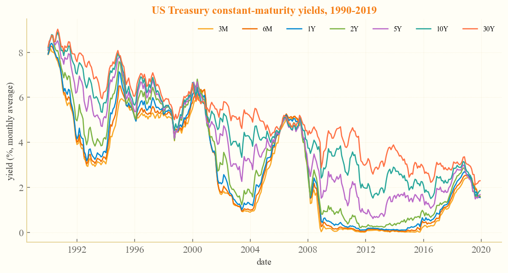
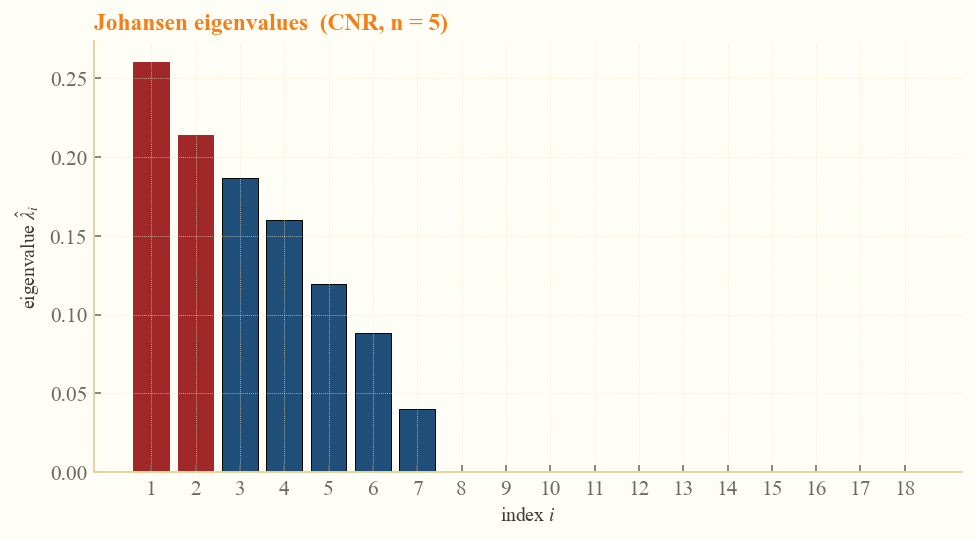
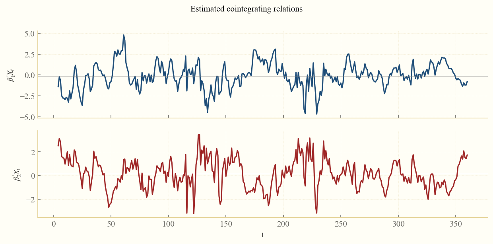
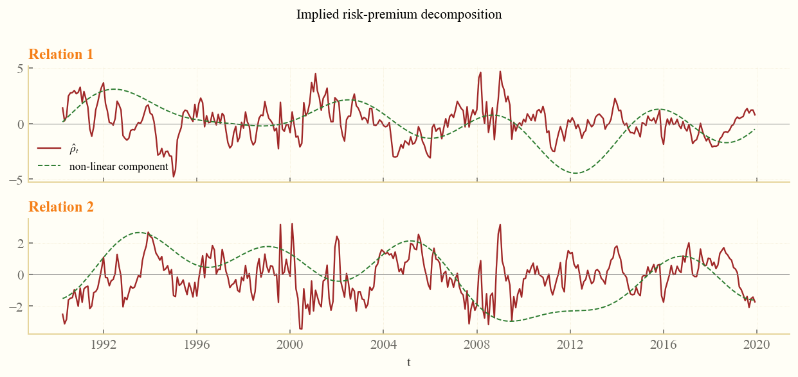
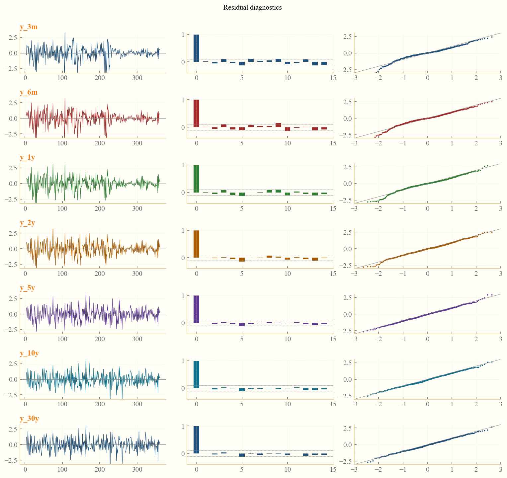
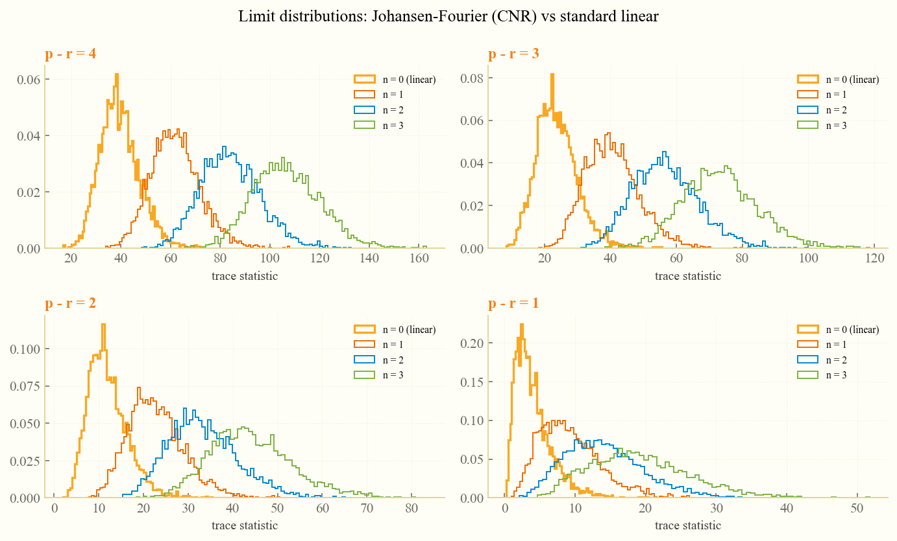

☰ Contents
1 Introduction
fjohansen is a Python package implementing the
Johansen cointegration test with Fourier-type smooth nonlinear
deterministic trends restricted to cointegrating relations, as
developed by Kurita & Shintani (2025, Econometric Reviews).
The test extends the classical Johansen procedure by allowing a slow, smooth nonlinear movement — a finite Fourier expansion — inside the long-run equilibrium. This makes the test substantially more powerful when the equilibrium drifts gradually through cycles (a time-varying risk premium, an unobserved policy stance, a slow structural transition).
The library also bundles the FGLS Wald test of Perron, Shintani & Yabu (2021), used as a frequency-selection pre-step.
2 Install
From PyPI
pip install fjohansenFrom GitHub (latest dev)
git clone https://github.com/merwanroudane/fjohansen.git
cd fjohansen
pip install -e .Optional pretty-printing extras
pip install "fjohansen[pretty]" # rich + tabulate3 Theory in five short paragraphs
Cointegration. A vector of $p$ non-stationary $I(1)$ series $X_t$ is said to be cointegrated of rank $r$ when there exist $r$ linear combinations $\beta' X_t$ that are stationary — the long-run equilibria of the system. Johansen (1988, 1996) developed the likelihood-ratio "trace" test to select $r$ inside a Gaussian VAR.
The problem. Standard Johansen models assume the equilibrium is constant up to a deterministic trend. When the long-run relation drifts slowly (a time-varying term premium, a moving real exchange rate target), the test loses power and often under-states $r$. The classical fix — allowing a structural break at a known date — is too rigid for smooth, repeated movements.
Kurita & Shintani (2025). Replace the constant equilibrium with a finite Fourier expansion $$F_{t,T} = [\sin(2\pi t/T),\,\cos(2\pi t/T),\ldots, \sin(2\pi n t/T),\,\cos(2\pi n t/T)]'$$ restricted to the cointegrating space: $$\Delta X_t = \alpha (\beta' X_{t-1} + \delta' F_{t,T} + \gamma') + \sum_{i=1}^{k-1} \Gamma_i \Delta X_{t-i} + \varepsilon_t.$$ The trace statistic $-T\sum_{i=r+1}^{p} \log(1-\hat\lambda_i)$ has a nuisance-parameter-free limiting distribution that depends only on $p-r$ and the number of frequencies $n$ (Proposition 3.1 of the paper).
Computation. The reduced-rank regression is unchanged. The library (i) reads $\hat\lambda_i$ from $\det(\lambda S_{11} - S_{10} S_{00}^{-1} S_{01}) = 0$, (ii) looks up critical values in Table B1 of the paper for the common cells, falling back to a Gamma approximation (Doornik 1998) elsewhere, and (iii) reports the sequential rank choice using the standard Johansen rule.
Picking $n$. The number of Fourier frequencies is chosen data-adaptively using the FGLS Wald test of Perron, Shintani & Yabu (2021): for each series we test from $n = n_{\max}$ down to $n = 1$ until the highest-frequency coefficients become significant. The final panel-wide $n$ is the maximum across series.
4 Data — US Treasury yields
Seven constant-maturity Treasury yields fetched live from FRED, averaged to monthly frequency over Jan 1990 – Dec 2019 (T = 360, p = 7).

5 Frequency selection (Perron-Shintani-Yabu 2021)
The PSY (2021) FGLS Wald test — robust to both $I(0)$ and $I(1)$ noise — is applied to each yield series via a general-to-specific algorithm with significance level $\alpha = 0.10$.
| series | n_selected | |
|---|---|---|
| 0 | y_3m | 5 |
| 1 | y_6m | 5 |
| 2 | y_1y | 5 |
| 3 | y_2y | 5 |
| 4 | y_5y | 5 |
| 5 | y_10y | 5 |
| 6 | y_30y | 5 |
6 Trace test — standard Johansen vs CNR
The standard test uses a constant restricted inside the cointegrating space (no Fourier). The CNR model adds the $\delta' F_{t,T}$ block.
| trace (std.) | p-val (std.) | trace (CNR) | p-val (CNR) | |
|---|---|---|---|---|
| H0 | ||||
| r <= 0 | 177.34 | 0.0000 | 422.24 | 0.0001 |
| r <= 1 | 127.52 | 0.0001 | 314.69 | 0.0191 |
| r <= 2 | 81.92 | 0.0126 | 228.84 | 0.1908 |
| r <= 3 | 47.11 | 0.1613 | 155.10 | 0.5918 |
| r <= 4 | 28.83 | 0.1981 | 92.96 | 0.9016 |
| r <= 5 | 12.39 | 0.4151 | 47.72 | 0.9599 |
| r <= 6 | 5.90 | 0.1930 | 14.71 | 0.9544 |
7 Eigenvalues of the reduced-rank regression

8 Estimated cointegrating relations
| v1 | v2 | |
|---|---|---|
| y_3m | -12.2150 | -10.8790 |
| y_6m | 15.7388 | 21.4000 |
| y_1y | -3.0666 | -11.5855 |
| y_2y | -7.2155 | -3.1293 |
| y_5y | 18.8387 | 16.6198 |
| y_10y | -18.9929 | -22.2542 |
| y_30y | 7.0492 | 10.3640 |

9 Implied risk-premium decomposition

The thick line is the full implied risk-premium series $\hat\rho_t = -\hat\beta' X_{t-1} - \hat\delta' F_{t,T} - \hat\gamma$. The dashed line isolates the smooth nonlinear component $\hat\delta' F_{t,T}$ — the slow, cyclical part of the premium.
10 Residual diagnostics

11 Limit distributions under the null

12 Critical values (Table B1 of the paper)
| n=1 95% | n=2 95% | n=3 95% | n=4 95% | n=5 95% | |
|---|---|---|---|---|---|
| p-r | |||||
| 2 | 34.52 | 48.68 | 62.44 | 76.14 | 89.75 |
| 3 | 56.06 | 76.30 | 96.46 | 116.55 | 136.70 |
| 4 | 81.19 | 108.22 | 135.03 | 161.64 | 188.25 |
| 5 | 110.64 | 144.37 | 177.87 | 211.49 | 244.96 |
| 6 | 143.58 | 183.99 | 224.55 | 264.82 | 304.89 |
| 7 | 180.95 | 227.88 | 275.45 | 322.43 | 369.35 |
| 8 | 222.28 | 275.96 | 329.61 | 383.76 | 437.64 |
13 Citation
If you use fjohansen in academic work, please cite both
the underlying paper and the package: